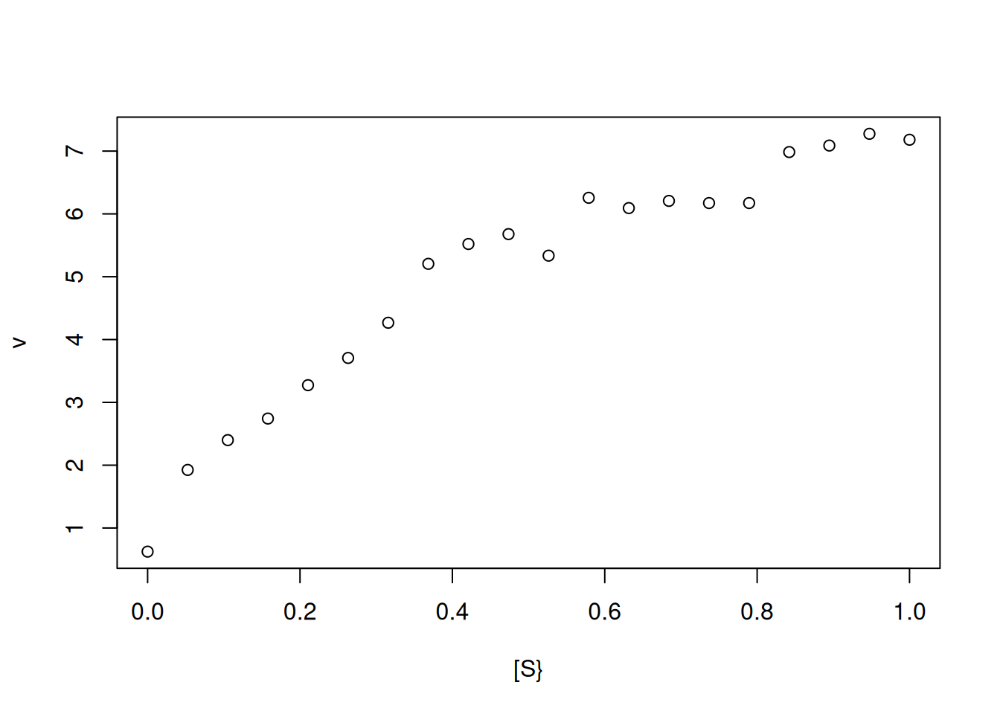
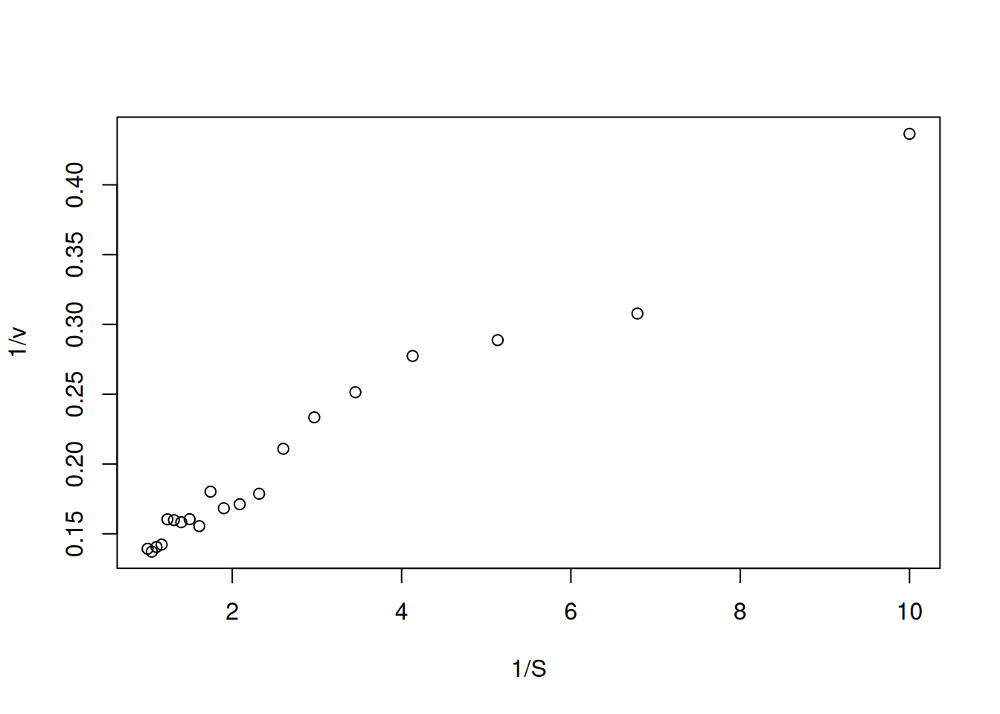
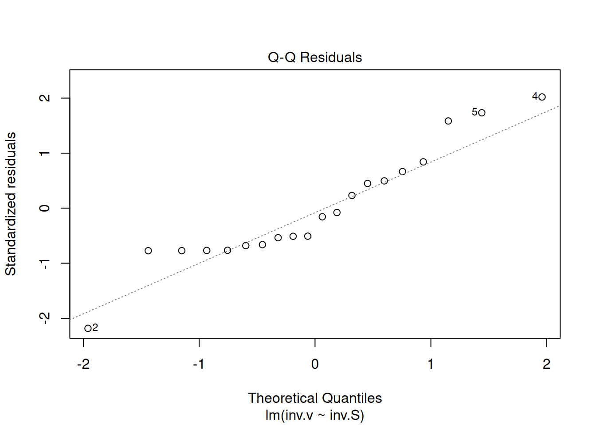
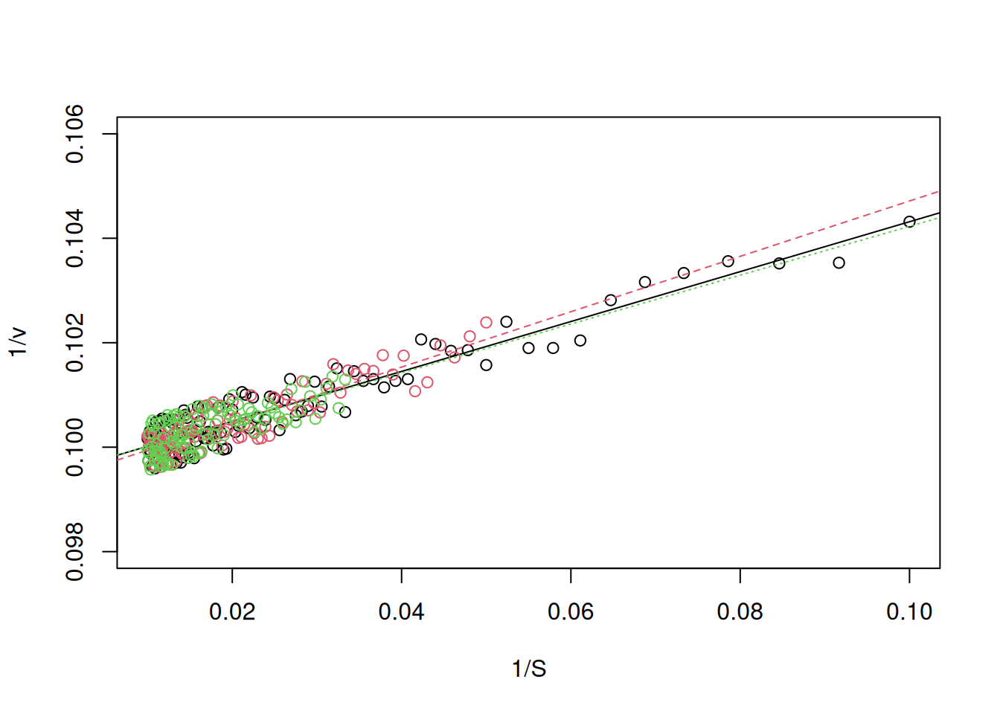
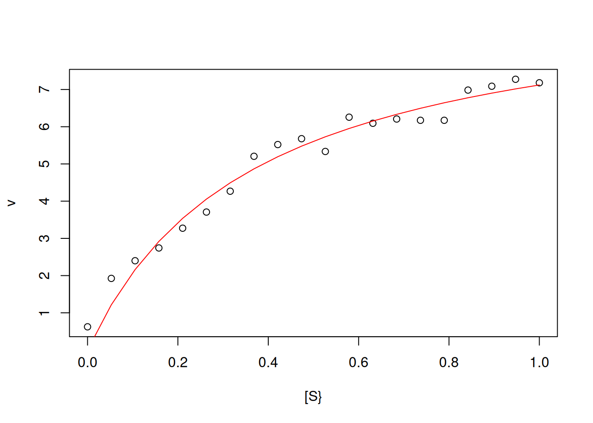
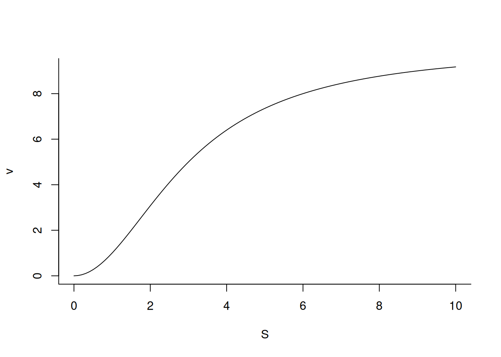

# Curva cinética de Michaelis-Mentem
Vm <- 10
Km <- 0.5
curve(Vm * x / (Km + x),
xlim = c(0, 10),
xlab = "[S]", ylab = "v"
)
abline(h = 5, lty = 2, col = "blue")
abline(v = 0.5, lty = 2, col = "blue")
text(x = 1, y = 0.2, "Km", col = "blue")
text(1, 5.3, "Vm/2", col = "blue")Enzimas
Cinética Enzimática
De modo geral, enzimas são estudadas sob diversos pontos de vista, tais como sua estrutura, mecanismo de ação, e comportamento cinético. Este capítulo visa trabalhar nesse último, com auxílio do
De modo geral, a equação simplificada que descreve a atividade de uma enzima E sobre um substrato S pode ser descrita como:
R.De modo geral, a equação simplificada que descreve a atividade de uma enzima E sobre um substrato S pode ser descrita como:
\[ E+S \begin{array}{c} _{k1}\\ \rightleftharpoons\\ ^{k2} \end{array} ES \begin{array}{c} _{k3}\\ \rightarrow \\ ^{}\end{array}E+P \tag{1}\]
Onde P representa o produto da reação, ES o complexo ativado no estado de transição, e k1, k2 e k3 as constantes de velocidade da reação.
Pela aproximação de Briggs-Haldane para o estado estacionário, e o tratamento de Henri-Michaelis-Menten, a equação que define a curva de velocidade da reação enzimática em função do teor de substrato pode ser descrita abaixo:
\[ v=\frac{Vm*S}{Km+S} \tag{2}\]
Onde Km representa a constante de Michaelis-Menten, e Vm a velocidade limite da reação (por vezes denominada erroneamente como velocidade máxima, embora a hipérbole quadrática descrita pela função não exiba valor máximo por não atingir uma assíntota). Por sua vez Km pode ser definido a partir das constantes de velocidade da Equação 1 como:
\[ Km=\frac{k1+k3}{k2} \tag{3}\]
Portanto, dados os valores de Vm e Km, podemos descrever um comportamento de Michaelis-Menten para uma enzima como:
Por essa relação, o valor de Km é representado pelo teor de substrato que confere metade do valor de Vm para a reação. Observe que pela Equação 2 o valor de Km no denominador influencia inversamente a velocidade v da reação; ou seja, quanto maior o valor de Km, menor a taxa da reação enzimática. Isto pode ser ilustrado iterativamente com um loop, tal como segue:
Vm <- 10
Km <- seq(from = 0.1, to = 10, by = 0.2) # sequência para 50 valores de Km
for (i in 1:length(Km)) { # loop para adicionar curva de Michaelis-Mentem
#a cada valor de Km
add <- if (i == 1) FALSE else TRUE # controle de fluxo que permite adição
# de curva a partir da segunda iteração (ou seja, quando i > 1)
curve(Vm * x / (Km[i] + x),
col = i, lwd = 0.8, from = 0, to = 10, n = 100,
xlab = "[S}", ylab = "v", add = add
)
}
arrows(0.5, 9, 3, 6, length = 0.1, angle = 45, col = "blue") # seta para Km
text(0.2, 9, "Km", col = "blue") # indexador para Km As curvas representadas nas figuras Figura 1 e Figura 2) foram produzidas com a Equação 2, sendo possível extrair os parâmetros cinéticos Vm e Km facilmente, já que não há desvios computados para a velocidade inicial da reação. Se, por outro lado, estivermos diante de valores experimentais de uma catálise de comportamento de michaelinano e desejarmos extrair os parâmetros cinéticos, melhor será ajustar a equação não-linear de Michaelis-Menten diretamente (algoritmos como Gauss-Newton, Simplex, Levenberg-Marquadt) ou, de modo mais simples, transformar as variáveis S e v de tal modo que permitam um ajuste linear por mínimos quadrados.
Não obstante, a função que descreve a equação de Michaelis-Mentem constitui uma hipérbole quadrática e, como tal, não possui assíntota matemática, apenas visual. De fato, os próprios autores do trabalho original, Leonor Michaelis e Maud Mentem, reportaram seus dados com a representação de S em eixo logaritmo permitindo melhor visualização da região assintótica do gráfico (Michaelis e Menten 1913).
Não obstante, a função que descreve a equação de Michaelis-Mentem constitui uma hipérbole quadrática e, como tal, não possui assíntota matemática, apenas visual. De fato, os próprios autores do trabalho original, Leonor Michaelis e Maud Mentem, reportaram seus dados com a representação de S em eixo logaritmo permitindo melhor visualização da região assintótica do gráfico (Michaelis e Menten 1913).
Obtenção de parâmetros cinéticos a partir de dados expermentais simulados
Para a determinação dos parâmetros cinéticos Vm e Km obtidos a partir de uma simulação experimental de dados de S e v, é necessário em primeiro lugar obter-se os pontos experimentais, tal como segue:
Vm <- 10
Km <- 0.5
set.seed(1500) # fixa a semente para geração de dados aleatórios reproduzíveis
erro <- runif(20, 0, 1) # comando para erro uniforme (no. de pontos, min, max)
curve(Vm * x / (Km + x) + erro,
type = "p", from = 0, to = 1, n = 20,
xlab = "[S}", ylab = "v"
) # elaboração da curva com cômputo de erro uniforme

Perceba que pela Figura 3, já não é mais possível definir-se uma região assintótica que permita a determinação de Vm e, por consequência, de Km. Nesse caso, pode-se obter os parâmetros cinéticos por tranformação da função hiperbólica de Michaelis-Mentem para uma função linear correlata, sucedendo-se o ajuste linear dos dados transformados para a obtenção dos parâmetros de catálise.
Linearizações e ajustes
Diversas são as linearizações encontradas na literatura para a equação de Michaelis-Mentem. Para exemplificá-las, segue um trecho de código contendo as quatro mais empregadas. Para isso utilizou-se um par de funções do
R para, respectivamente, estabelecer a área gráfica e sua subdivisão para plotagem em 4 paineis (par e mfrow ou mfcol):S <- c(0.1, 0.2, 0.5, 1, 5, 10, 20) # cria um vetor para substrato
Km <- 0.5
Vm <- 10 # estabelece os parâmetros enzimáticos
v <- Vm * S / (Km + S) # aplica a equação de MM ao vetor de S
par(mfrow = c(2, 2)) # estabelece área de plot pra 4 gráficos
plot(S, v, type = "o", main = "Michaelis-Mentem")
plot(1 / S, 1 / v, type = "o", main = "Lineweaver-Burk")
plot(v, v / S, type = "o", main = "Eadie-Hofstee")
plot(S, S / v, type = "o", main = "Hanes-Woolf")
layout(1) # volta à janela gráfica normal
Dentre essas transformações lineares para cinética enzimática, as mais frequentemente encontradas são de Lineweaver-Burk (ou duplo-recíproco), e a de Eadie-Hofstee, sendo a primeira a mais comum na literatura. No entanto, a aplicação do formalismo de Eadie-Hofstee para interação ligante-proteína também é a mais reportada nessa área, embora seja tratada como representação de Scatchard (Scatchard 1949).
Linearização por transformação de Lineweaver-Burk
A forma linear para a equação de Linewaver-Burk é obtida a partir da transformação da equação de Michaelis-Menten que segue:
\[ \frac{1}{v}=\frac{1}{Vm}+\frac{Km}{Vm}*\frac{1}{S} \tag{4}\]
Dessa forma, os dados obtidos pela Figura 3 são transformados para seu duplo-recíproco, resultando em:
S <- seq(0.1, 1, length.out = 20) # gera uma sequência com 20 pontos entre
# 0 e 1 para valores de substrato
Vm <- 10
Km <- 0.5 # parâmetros cinéticos
set.seed(1500) # estabelecer a mesma semente aleatória do gráfico direto
# de Michaelis-Menten, para reproducibilidade dos pontos
erro <- runif(20, 0, 1) # comando para erro uniforme (no. de pontos, min, max)
v <- Vm * S / (Km + S) + erro # equação de Michaelis-Menten
inv.S <- 1 / S # cria variáveis para o duplo-recíproco
inv.v <- 1 / v
plot(inv.v ~ inv.S, xlab = "1/S", ylab = "1/v") # elabora o gráfico de
# Lineweaver-Burk

Observe que a Figura 5 apresenta agora um uma distribuição de valores que possibilita seu ajuste linear por mínimos quadrados (regressão linear). No
R, isso pode ser facilmente conduzido pelo trecho de código (chunk) que segue:reg.LB <- lm(inv.v ~ inv.S) # expressão para ajuste linear
summary(reg.LB) # resultados do ajuste
Call:
lm(formula = inv.v ~ inv.S)
Residuals:
Min 1Q Median 3Q Max
-0.028198 -0.009858 -0.003496 0.007482 0.028416
Coefficients:
Estimate Std. Error t value Pr(>|t|)
(Intercept) 0.113634 0.005147 22.08 1.74e-14 ***
inv.S 0.032772 0.001461 22.42 1.33e-14 ***
---
Signif. codes: 0 '***' 0.001 '**' 0.01 '*' 0.05 '.' 0.1 ' ' 1
Residual standard error: 0.01459 on 18 degrees of freedom
Multiple R-squared: 0.9654, Adjusted R-squared: 0.9635
F-statistic: 502.8 on 1 and 18 DF, p-value: 1.325e-14plot(inv.v ~ inv.S, xlab = "1/S", ylab = "1/v") # gráfico de Lineweaver-Burk
abline(reg.LB, col = "blue") # sobreposição do ajuste ao gráfico A tabela produzida pelo
R para a função lm de ajuste linear por mínimos quadrados possui diversas informações que nos permite avaliar a qualidade da regressão. Brevemente, esse tabela nos fornece o valor de cada parâmetro do ajuste conforme a equação que segue:\[ y = a + b *x \tag{5}\]
Nesse caso, a refere-se ao intercepto presente na tabela ((intercept), ou 1/Vm) e b à inclinação (inv.S, ou Km/Vm). Além disso, a tabela também fornece diversos resultados complentares, elencados a seguir:
valor de erro-padrão dos parâmetros (Std. Error);
valor da distribuição t de Student (t value);
o respectivo nível de probabilidade (Pr) com indicação de significância (asteriscos);
erro padrão residual (Residual standard error);
valor dos coeficientes de determinação bruto (Multiple R-squared) e ajustado para os graus de liberdade (Adjusted R-squared);
valor da distribuição F de Snedocor (F-statistic) de variância do ajuste;
graus de liberdade (DF) e o valor de significância da regressão ao modelo linear obtido pela análise de variância (p-value).
Não obstante, a qualidade do ajuste linear também pode ser verificada pela produção de gráficos diagnósticos estatísticos, bastando-se aplicar o trecho simples abaixo:
plot(reg.LB) # comando para geração de gráficos diagnósticos de ajuste linear


Esses gráficos diagnósticos também podem ser alocados em paineis, como ilustrado para as linearizações de Michaelis-Mentem acima.
reg.LB <- lm(inv.v ~ inv.S)
par(mfrow = c(2, 2))
plot(reg.LB)
layout(1) Os quatro gráficos gerados acima referem-se, respectivamente, 1) à variação de resíduos com os valores ajustados, 2) a um teste de distribuição normal dos resíduos, 3) à variação de resíduos padronizados em função dos valores ajustados, e 4) à observação de valores influenciáveis identificáveis pela distância de Cook para cada observação. Em relação à esse último, pode-se opcionalmente definir sua aparência para identificação daqueles valores por seleção (
which, 4 ou 6, por ex), tal como em:plot(reg.LB, which = 4)
Por esses dois procedimentos, tabela e gráficos diagnósticos, é possível aferir a qualidade de um ajuste linear pelo
Para acessar os parâmetros contidos na função
R. Em paralelo, diversas são as funções associadas à própria função lm para modelos lineares (objetos), o que reforça o caráter de linguagem orientada a objeto do R. Entre essas vale citar, com significado intuitivo, coef, fitted, predict, residuals, confint, e deviance.Para acessar os parâmetros contidos na função
lm, assim como outras de mesma natureza no R, basta digitar args:args(lm)function (formula, data, subset, weights, na.action, method = "qr",
model = TRUE, x = FALSE, y = FALSE, qr = TRUE, singular.ok = TRUE,
contrasts = NULL, offset, ...)
NULL Complementarmente, vale mencionar a existência de inúmeros pacotes do
R para diversas situações e tratamentos estatísticos de dados para modelos lineares, e que fogem ao escopo deste manuscrito, tais como os que possibilitam análises de outliers (valores extremos), Generalized Linear Models, Mixed Effects Models, Non-parametric Regression, entre outros. Entre os pacotes do R complementares para regressão linear vale mencionar car, MASS, caret, glmnet, sgd, BLR, e Lars.Considerações sobre a linearização por Lineweaver-Burk.
De volta ao estudo da cinética de estado estacionário da catálise enzimática, mencionamos acima a possibilidade de linearizações da equação de Michaelis-Mentem por dois tratamentos mais comuns, Lineweaver-Burk e Eadie-Hofstee. De modo geral, qualquer tratamento que resulte na transformação de um modelo original (equação de Michaelis-Menten, no caso) por linearização resultará em desvios estatísticos.
Analisando a equação de Lineweaver-Burk, por exemplo, pode-se evidenciar que, como os valores de S e v estão representados por seus recíprocos, uma pequena variação em v resultará numa grande variação em 1/v. Por outro lado, a escolha da faixa de teores de S também é extremamente importante para a extração de parâmetros cinéticos. Isso pode ser ilustrado no exemplo que segue:
Vm <- 10
Km <- 0.5
set.seed(1500) # semente fixa para erro aleatório
erro <- runif(length(S), 0, 0.1)
S <- seq(1, 10, 0.1)
v <- Vm * S / (Km + S) + erro
plot(v ~ S, xlab = "S", ylab = "v") Observe que a Figura 8 inicia em velocidade próxima a zero, e termina em velocidade próxima à Vm, com teor de S >> Km (50 vezes, de fato). Essa condição permite uma extração segura dos parâmetros cinéticos, os quais podem ser obtidos a partir do ajuste linear do gráfico duplo-recíproco.
# Chunk para Lineweaver-Burk
set.seed(1500) # semente fixa para erro aleatório
erro <- runif(length(S), 0, 0.2)
Vm <- 10
Km <- 0.5 # parâmetros cinéticos
inv.S <- 1 / seq(1, 10, 0.1) # 1/S
inv.v <- 1 / (Vm * S / (Km + S) + erro) # 1/v
plot(inv.S, inv.v)
lm.LB2 <- lm(inv.v ~ inv.S) # ajuste linear
summary(lm.LB2) # resultados do ajuste
Call:
lm(formula = inv.v ~ inv.S)
Residuals:
Min 1Q Median 3Q Max
-0.0015050 -0.0005613 -0.0001463 0.0007522 0.0014122
Coefficients:
Estimate Std. Error t value Pr(>|t|)
(Intercept) 0.0991811 0.0001356 731.3 <2e-16 ***
inv.S 0.0481555 0.0004193 114.9 <2e-16 ***
---
Signif. codes: 0 '***' 0.001 '**' 0.01 '*' 0.05 '.' 0.1 ' ' 1
Residual standard error: 0.0007741 on 89 degrees of freedom
Multiple R-squared: 0.9933, Adjusted R-squared: 0.9932
F-statistic: 1.319e+04 on 1 and 89 DF, p-value: < 2.2e-16abline(lm.LB2, col = "blue")
Perceba como os valores de Vm e Km ajustados aproximaram-se dos valores preditos, já que para o gráfico duplo-recíproco:
\[ Vm=\frac{1}{intercepto} ; \\ Km = intercepto * Vm \tag{6}\]
Agora, o que aconteceria se os pontos experimentais estivessem em faixas distintas de teores de S ? Exemplificando, se os pontos fossem coletados em três regiões distintas de S: 10-100, 30-100, e 50-100 ?
Isso pode ser ilustrado variando-se a faixa de valores de S iterativamente, e inspecionando-se o gráfico duplo-recíproco resultante como no trecho de código que segue, e para os mesmos valores da Figura 9.
# Chunk para duplos-recíprocos de dados simulados com variação em [S]
set.seed(1500) # mesma semente aleatória para reproducibilidade de erro
Vm <- 10
Km <- 0.5 # estabelece os parâmetros de MM
S <- seq(10, 100, 10) # cria-se uma sequência inicial para S
v <- Vm * S / (Km + S) # aplicação equação de MM à S
plot(1 / S, 1 / v, type = "n", ylim = c(0.098, 0.106)) # elabora o
# duplo-recíproco sem pontos
for (i in 1:3) { # inicia a iteração para gráficos de Lineweaver-Burk
S <- seq(10 * i, 100, length.out = 100) # gera uma sequência S com
# 100 pontos, produzindo 5 vetores que iniciam em valores diferentes
# para S (10, 30 e 50)
erro <- runif(length(S), 0, 0.1) # erro para adição à vetor de
# velocidade inicial, com no. de pontos em função do vetor de S
add <- if (i == 1) FALSE else TRUE # controle de fluxo para plotagem
# de pontos no gráfico vazio
inv.S <- 1 / S
inv.v <- 1 / ((Vm * S / (Km + S)) + erro) # novos valores para o
# duplo-recíproco em função da iteração
points(inv.v ~ inv.S, xlab = "1/S", ylab = "1/v", col = i, add = add)
# adição de pontos ao gráfico de Lineweaver-Burk, com identificação
# por cores (1, 2, 3, 4 e 5)
lm.LB <- lm(inv.v ~ inv.S) # elabora o ajuste linear
abline(lm.LB, col = i, lty = i) # sobrepõe as linhas de ajuste
}

Observe agora que pela Figura 10 resultante, tanto o intercepto como a inclinação obtidos a partir dos ajustes foram dependentes da faixa de seleção de S, o que resulta em distintos valores para Vm e Km. Isto mostra como a seleção da faixa de S para o cálculo de Km e Vm é crucial.
Linearização por transformação de Eadie-Hofstee
Como já mencionado, as duas linearizações da equação de Michaelis-Menten mais comuns referem-se à do subtítulo acima. A equação de linearização de Eadie-Hosftee é dada abaixo:
\[ v = \frac{1}{Km} * \frac{v}{S} + Vm \tag{7}\]
A partir dos dados da Figura 3 obtém-se os parâmetros cinéticos diretamente do intercepto (Vm) e da inclinação linear (1/Km) por:
# Linearização por Eadie-Hofstee
Vm <- 10
Km <- 0.5
set.seed(1500) # semente fixa para erro aleatório
erro <- runif(length(S), 0, 0.1)
S <- seq(1, 10, 0.1)
v <- Vm * S / (Km + S) + erro
v.S <- v / S
plot(v.S ~ v, xlab = "v", ylab = "v/S")
lm_EH <- lm(v.S ~ v)
summary(lm_EH)
Call:
lm(formula = v.S ~ v)
Residuals:
Min 1Q Median 3Q Max
-0.11602 -0.06496 0.01172 0.05466 0.12483
Coefficients:
Estimate Std. Error t value Pr(>|t|)
(Intercept) 20.31073 0.07906 256.9 <2e-16 ***
v -2.02191 0.00893 -226.4 <2e-16 ***
---
Signif. codes: 0 '***' 0.001 '**' 0.01 '*' 0.05 '.' 0.1 ' ' 1
Residual standard error: 0.07036 on 98 degrees of freedom
Multiple R-squared: 0.9981, Adjusted R-squared: 0.9981
F-statistic: 5.126e+04 on 1 and 98 DF, p-value: < 2.2e-16abline(lm_EH, col = "blue")
Distribuição de erros nas linearizações de Michaelis-Mentem
Embora ambas as representações, Lineweaver-Burk e Eadie-Hofstee, sejam as mais utilizadas e apresentem semelhança na obtenção dos parâmetros cinéticos, sua distribuição de resíduos é bem distinta, assim como as demais transformações lineares de Michaelis-Mentem (Figura 4).
O código abaixo ilustra a distribuição de erros dessas transformações, introduzindo uma função importante do
O código abaixo ilustra a distribuição de erros dessas transformações, introduzindo uma função importante do
R para construção de gráficos com barras de erros: arrows.# Erros aleatórios na eq. de MM e linearizações
Vm <- 10
Km <- 0.5 # fixa os parâmetros de MM
set.seed(1500) # fixa semente para erro aleatório
erro <- runif(length(S), 0, 0.5) # vetor de erro uniforme
S <- c(0.1, 0.2, 0.5, 1, 5, 10, 20) # vetor de substrato
v <- Vm * S / (Km + S) # equação de MM
par(mfrow = c(2, 2)) # área de plot pra 4 gráficos
plot(S, v, type = "o", main = "Michaelis-Mentem")
arrows(S, v, S, v - erro, length = .05, angle = 90) # barra inferior de erro
arrows(S, v, S, v + erro, length = .05, angle = 90) # barra superior de erro
plot(1 / S, 1 / v, type = "o", main = "Lineweaver-Burk")
arrows(1 / S, 1 / v, 1 / S, 1 / (v - erro), length = .05, angle = 90)
arrows(1 / S, 1 / v, 1 / S, 1 / (v + erro), length = .05, angle = 90)
plot(v, v / S, type = "o", main = "Eadie-Hofstee")
arrows(v, v / S, v, (v - erro) / S, length = .05, angle = 90)
arrows(v, v / S, v, (v + erro) / S, length = .05, angle = 90)
plot(S, S / v, type = "o", main = "Hanes-Woolf")
arrows(S, S / v, S, S / (v - erro), length = .05, angle = 90)
arrows(S, S / v, S, S / (v + erro), length = .05, angle = 90)
par(mfrow = c(1, 1)) # retorno à janela gráfica normal Pelo gráfico da Figura 11 fica evidente que as transformações de Lineweaver-Burk e de Eadie-Hofstee, ainda que tenham prevalência na literatura, são as que apresentam a maior variabilidade de erro a partir dos dados experimentais, o que converge para uma menor precisão na determinação de parâmetros cinéticos. Além disso, observa-se que a transformação de Hanes-Woolf é a que apresenta a menor dispersão de resíduos entre as demais, igualando-se aos erros experimentais da equação hiperbólica de Michaelis-Mentem. Apesar disso, a linearização de Hanes-Woolf é muito pouco reportada na literatura.
Ainda que a representação dos duplos-recíprocos tenha em si algumas desvantagens, tais como a dispersão de erros principalmente em valores baixos de S, é a única dentre as mencionadas que permite um ajuste linear por mínimos quadrados, se considerarmos as premissas estatísticas desse.
Para que se possa obter parâmetros de intercepto e inclinação a partir de uma regressão linear, é necessário que se cumpra as premissas estatísticas de 1) distribuição normal de resíduos, 2) homogeneidade de variâncias, e 3) independência das variáveis. Se observarmos as três linearizações, tanto a de Eadie-Hofstee como a de Hanes-Woolf não cumprem a premissa de independência, já que a variável dependente (y) é função da independente (x).
Para que uma transformação por duplos-recíprocos possa ser utilizada mais fielmente à obtenção de parâmetros cinéticos, contudo, pode-se adotar o cômputo de peso na fórmula de ajuste linear, tal como sugerido por Wilkinson (Wilkinson 1961), considerando-o como o recíproco das variâncias estimadas. Nesse caso, o ajuste linear considerando o quadrado do vetor de erros aleatórios como variância e o peso como seu recíproco (1/s²), pode ser esboçado como:
Ainda que a representação dos duplos-recíprocos tenha em si algumas desvantagens, tais como a dispersão de erros principalmente em valores baixos de S, é a única dentre as mencionadas que permite um ajuste linear por mínimos quadrados, se considerarmos as premissas estatísticas desse.
Para que se possa obter parâmetros de intercepto e inclinação a partir de uma regressão linear, é necessário que se cumpra as premissas estatísticas de 1) distribuição normal de resíduos, 2) homogeneidade de variâncias, e 3) independência das variáveis. Se observarmos as três linearizações, tanto a de Eadie-Hofstee como a de Hanes-Woolf não cumprem a premissa de independência, já que a variável dependente (y) é função da independente (x).
Para que uma transformação por duplos-recíprocos possa ser utilizada mais fielmente à obtenção de parâmetros cinéticos, contudo, pode-se adotar o cômputo de peso na fórmula de ajuste linear, tal como sugerido por Wilkinson (Wilkinson 1961), considerando-o como o recíproco das variâncias estimadas. Nesse caso, o ajuste linear considerando o quadrado do vetor de erros aleatórios como variância e o peso como seu recíproco (1/s²), pode ser esboçado como:
# Regressão linear ponderada de Lineweaver-Burk
S <- seq(0.1, 1, length.out = 20)
Vm <- 10
Km <- 0.5
set.seed(1500)
erro <- runif(20, 0, 1)
v <- Vm * S / (Km + S) + erro
inv.S <- 1 / S
inv.v <- 1 / v
reg.LB.peso <- lm(inv.v ~ inv.S, weights = 1 / erro^2) # expressão para
# ajuste linear
summary(reg.LB.peso) # resultados do ajuste
Call:
lm(formula = inv.v ~ inv.S, weights = 1/erro^2)
Weighted Residuals:
Min 1Q Median 3Q Max
-0.04779 -0.02231 -0.01849 0.00162 0.04830
Coefficients:
Estimate Std. Error t value Pr(>|t|)
(Intercept) 0.117327 0.002545 46.11 < 2e-16 ***
inv.S 0.034906 0.001452 24.04 3.93e-15 ***
---
Signif. codes: 0 '***' 0.001 '**' 0.01 '*' 0.05 '.' 0.1 ' ' 1
Residual standard error: 0.02967 on 18 degrees of freedom
Multiple R-squared: 0.9698, Adjusted R-squared: 0.9681
F-statistic: 578 on 1 and 18 DF, p-value: 3.932e-15 Ainda que os ajustes tenham sido realizados para valores com baixa variabilidade de erros uniformes, uma comparação entre esse resultado e o da Figura 6 revela ligeira superioridade para o primeiro, com maior valor para o coeficiente de determinação R², menor para p-valor, e menores para o erro-padrão das estimativas.
Complementarmente, pode-se obter uma comparação estatística entre o modelo linear simples e o que adotou o peso estatístico por:
Complementarmente, pode-se obter uma comparação estatística entre o modelo linear simples e o que adotou o peso estatístico por:
anova(reg.LB, reg.LB.peso)Analysis of Variance Table
Model 1: inv.v ~ inv.S
Model 2: inv.v ~ inv.S
Res.Df RSS Df Sum of Sq F Pr(>F)
1 18 0.0038295
2 18 0.0158493 0 -0.01202 Ajuste não-linear
Ainda que linearizações sejam frequentemente utilizadas mesmo hoje em dia, principalmente para discernir entre modelos cinéticos distintos, a determinação precisa dos parâmetros de catálise é contudo melhor conduzida por ajuste ou regressão não-linear. Esse ajuste tem por objetivo a determinação de parâmetros de uma equação (Vm e Km, no caso) sem a necessidade de qualquer transformação dos dados, eliminando por essa razão os erros associados.
O ajuste não-linear difere do linear em algumas características, tais como:
O ajuste não-linear difere do linear em algumas características, tais como:
- A busca iterativa de um valor mínimo (local ou global) para a soma dos quadrados dos erros das estimativas;
- a necessidade de um valor inicial para os parâmetros (sementes);
- a linearidade nos erros e no gradiente da função sobre os parâmetros.
- a necessidade de algoritmo mais sofisticado para solução simbólica e matricial para minimizar a derivada da função sobre cada parâmetro;
- a necessidade de programa que trabalhe com álgebra matricial (computador, dispositivo móvel ou calculadora);
- o uso de algoritmos mais sofisticados (Gauss, Newton-Raphson, Levenberg-Marquadt, Simplex).
- o emprego da equação original do modelo, por vezes de difícil linearização.
Ajuste não-linear da equação de Michaelis-Mentem
Para uma regressão não-linear da equação de Michaelis-Mentem reproduzindo-se a simulação exemplificada na Figura 3:
# Regressão não linear para simulação de eq. de MM
Vm <- 10
Km <- 0.5
set.seed(1500)
erro <- runif(20, 0, 1)
S <- seq(0, 1, length.out = 20)
v <- Vm * S / (Km + S) + erro
dat.Sv <- data.frame(S, v) # criação de planilha com S e v
plot(v ~ S,
type = "p", from = 0, to = 1, n = 20,
xlab = "[S}", ylab = "v"
) # construção do gráfico de MM
nl.MM <- nls(v ~ Vm * S / (Km + S), start = list(Vm = 7, Km = 0.2),
data = dat.Sv) # linha de código para ajuste não linear
lines(S, fitted(nl.MM), col = "red") # sobreposição da linha
# ajustada
summary(nl.MM) # sumário dos resultados
Formula: v ~ Vm * S/(Km + S)
Parameters:
Estimate Std. Error t value Pr(>|t|)
Vm 9.75490 0.52114 18.718 3.01e-13 ***
Km 0.36979 0.05015 7.373 7.68e-07 ***
---
Signif. codes: 0 '***' 0.001 '**' 0.01 '*' 0.05 '.' 0.1 ' ' 1
Residual standard error: 0.3514 on 18 degrees of freedom
Number of iterations to convergence: 5
Achieved convergence tolerance: 1.64e-06 Observe agora pela tabela de sumário do ajuste que os parâmetros são fornecidos diretamente, sem necessidade de transformação, como no ajuste linear. A tabela diferencia-se do sumário de ajuste linear por apresentar o número de iterações para convergência, e o valor de convergência para tolerância. Contudo, não apresenta o coeficiente de determinação R², mas somente o erro padrão residual. Ainda que a discussão esteja longe da proposta desta obra, alguns autores declinam do emprego de R² em regressão não-linear pelo mesmo ser decorrente de relações lineares entre os parâmetros, o que não ocorre no caso.
Assim como para ajuste linear, os parâmetros que abrangem a função
Assim como para ajuste linear, os parâmetros que abrangem a função
nls envolvem:args(nls)function (formula, data = parent.frame(), start, control = nls.control(),
algorithm = c("default", "plinear", "port"), trace = FALSE,
subset, weights, na.action, model = FALSE, lower = -Inf,
upper = Inf, ...)
NULL Além do pacote incluido na distribuição básica do
R e que permite ajustes não-lineares (stats), existem diversos outros que permitem ajustes com algoritmos, avaliações e plotagens variadas, tais como nlme (mixed-effects), nlrwr, nlstools, nls2, nls.multstart, minpack.lm (algoritmo de Levenberg-Marquadt), nlshelper, e nlsLM.Algumas vantagens do modelo linear sobre o não-linear
Ainda que a estimativa de parâmetros de modelos não lineares seja mais precisa utilizando-se ajustes também não lineares, o algoritmo linear oferece algumas vantagems, entre as quais:
- É mais fácil, com algoritmo simplificado, e mesmo pelo uso de somatórias de algumas quantidades envolvendo x e y, sendo resolvido com calculadora científica simples, ou mesmo à mão;
- é mais intuitivo visualmente, posto que o modelo final será sempre uma reta;
- possui apenas dois parâmetros na equação, intercepto e inclinação;
- requer poucas medidas, já que uma reta se constroi com apenas dois pontos;
- não requer sementes para estimativas iniciais o que, a depender do modelo não-linear, pode ser bem abstrato, culminando em mínimos locais ou mesmo na falta de solução para o ajuste;
- permite interpretação experimental quando há fuga da linearidade;
- independe de um modelo físico específico;
- não requer, por vezes, a necessidade de constrição de resultados (constraints), por exemplo instruindo o algoritmo a buscar uma estimativa obrigatoriamente de valor positivo para o parâmetro.
- relações lineares e transformações são encontradas em inúmeros modelos físicos nas Ciências Naturais.
Enzimas alostéricas
A alosteria constitui um dos principais recursos da metabolismo para a regulação dos níveis de compostos celulares. De etiologia grega (allos = outro, stereos = estrutura), uma enzima alostérica é aquela que altera seu perfil catalítico em função de transições conformacionais mediadas por moléculas que interagem fora de seu sítio ativo, sejam elas substrato, coenzimas, ou outros compostos (Traut 2007). O efeito resultante constitui em uma modulação da atividade enzimática, quer ativando-a ou inibindo-a. Enzimas alostérica comportam-se portanto como enzimas regulatórias em uma rota metabólica, e cuja atividade pode ser modulada em função de retroinibição ou inibição por feedback, bem como por ativação pelo precursor (Leone 2021).
A equação que define uma enzima alostérica em função do teor de seu substrato dada abaixo:
A equação que define uma enzima alostérica em função do teor de seu substrato dada abaixo:
\[ v=\frac{Vm*S^n}{(Km^n+S^n)} \tag{8}\]
Onde nH representa o coeficiente de cooperatividade ou constante de Hill para a ligação com moléculas de S (de maneira similar à ligação de \(O_{2}\) à hemoglobina. De modo geral, o valor de nH pode ser inferior à unidade (cooperatividade negativa) ou superior a essa (cooperatividade positiva). Para ilustrar o comportamento cinético de uma enzima alostérica, segue o trecho abaixo, que também introduz outro formato para representar curvas no R nomeando a variável independente (x).
# Gráfico para enzima alostérica
v <- function(S, Vm = 10, Km = 3, nH = 2) {
Vm * S^nH / (Km^nH + S^nH)
}
curve(v,
from = 0, to = 10, n = 100, xlab = "S", ylab = "v",
bty = "L"
) # eixos em L
Interessante também observar como o perfil enzimático alostérico se define frente à variação do coeficiente nH.
# Influência da constante de Hill (nH) sobre uma enzima alostérica
nH <- seq(from = 0.1, to = 3, length.out = 7) # sequência para 7 valores de nH
for (i in 1:length(nH)) { # loop para adicionar curva alostérica a cada valor de nH
add <- if (i == 1) FALSE else TRUE # controle de fluxo
v <- function(S, Vm = 10, Km = 3, a = nH[i]) {
Vm * S^a / (Km^a + S^a)
}
curve(v,
from = 0, to = 4, n = 500, col = i, xlab = "S", ylab = "v",
bty = "L", add = add
)
}
arrows(0, 5, 3, 2, length = 0.1, angle = 45, col = "blue") # seta para nH
text(0.5, 5.2, "nH", col = "blue") # indexador para nH
Referências
Leone, Francisco de Assis. 2021. Fundamentos de Cinética Enzimática. Appris Ed.
Michaelis, L., e ML Menten. 1913. «Die Kinetik der Invertinwirkung». Biochem Z 49 (4): 333–69.
Scatchard, George. 1949. «The attractions of proteins for small molecules and ions». Annals of the New York Academy of Sciences 51 (4): 660–72.
Traut, Thomas W. 2007. Allosteric regulatory enzymes. Springer Science & Business Media.
Wilkinson, GN. 1961. «Statistical estimations in enzyme kinetics». Biochemical Journal 80 (2): 324–32.